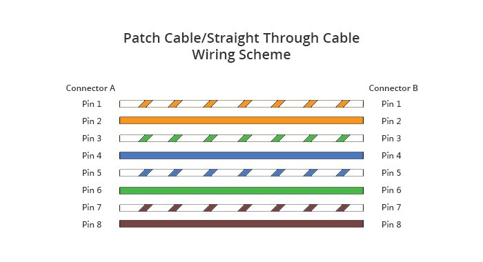
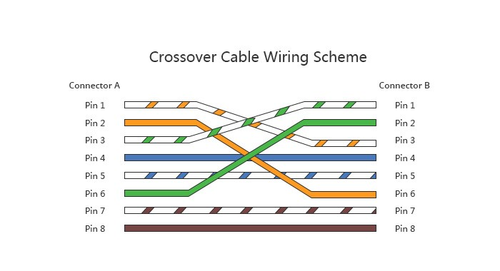

|
|
Equipo:Dimas Álvarez - Karyme López - Samantha Suárez Profesor:Huber Girón Nieto Objetivo General:Conocer, identificar y comprobar el funcionamiento de los cables de red estructurado. Objetivos específicos:
· Investigar la configuración de los cables de red estructurados: Directo y Cruzado
El cable directo funciona cuando ambos extremos utilizan el mismo estándar de cableado: T-568A o T-568B, es decir sus pines coinciden. En cambio el cable cruzado utiliza diferentes estándares de cableado en cada uno de sus extremos: uno el estándar T568A y el otro el estándar T568B. · Investigar y explicar la forma de probar un cable de red directo y uno cruzado. · Armar 2 cables de red directos y probarlos. · Armar 2 cables de red cruzados y probarlos. Material:- Cable de red para armar - Cabezales de ethernet - Pinza ponchadora de cable de red Evidencia:
Fotos y videos
BibliografíaW. (2021, 7 agosto). ¿Cuál es la diferencia entre cable de red directo y cable de red cruzado? | Comunidad FS. FS Community. Recuperado 23 de febrero de 2023, de https://community.fs.com/es/blog/patch-cable-vs-crossover-cable-what-is-the-difference.html |